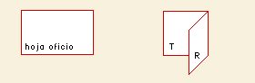
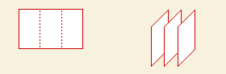
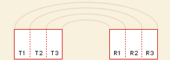
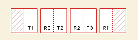

La construcción
de una edición del colectiva taller
Cada cual lleva consigo el estudio en una continuidad. La vía
de la observación faculta sostener esta continuidad, donde cada
paso se constituye como una experiencia ganada: desde las salidas de observación
a la ciudad donde se ve y se nombra, hasta la forma construida. Cada cual
lleva su propia continuidad que se expone cada martes y cada viernes ante
el total del taller. En ese acto de exposición comparece el cuerpo
del total y el total del taller se vislumbra por cada parte que se expone.
Vamos a apuntar a la construcción de una
edición que contenga el cuerpo del taller, por tanto, se trata
de una edición hecha y sostenida por todos.
La parte de cada cual, entonces quedará medida desde dos dimensiones:
(a) desde su valor intrínseco,
la claridad de un discurso que se encumbra en una forma y, en ese paso
a paso comparece la continuidad que ha sostenido el estudio propio.
Y (b) desde el valor que tiene
como parte de una secuencia, es decir, de su potencia capaz de inscribirse
en un total que tiene otra continuidad, otro pulso, otro ritmo; donde
la unidad se vuelve parte de un todo.
La Continuidad de Cada Cual
En ese sentido, cada alumno construirá su discurso (en un sentido
de la progresión: observación – nombre – forma)
con ocasión del proyecto actual de intervención urbana en
Valparaíso, el pórtico de exposición. Este discurso
estará construido y medido para ser editado; irá a sumarse
al total de los discursos del taller en una suerte de “libro –
compendio” ordenado por nombre y taller; además de un prefacio
escrito por los profesores, conformando una edición que dará
cuenta del cuerpo presente del taller de primer año.
El discurso se articula en 4 momentos, espacialmente
diferenciados:

Primer momento:
Espacialmente corresponde al encadenamiento con el anterior, en esta doble
página donde se gobierna la página derecha, una suerte de
antesala al discurso y contiene: (a) Un autorretrato como una dimensión de identificación,
identificación desde los rasgos, desde la forma del propio rostro. (b) Un curso del espacio elegido libremente entre los
ya realizados, es una nota introductoria en el sentido de una precisión
respecto de la forma. Se trata de un punto de nitidez del estudio que
puede estar directa o indirectamente relacionado al discurso
Segundo momento:
Espacialmente corresponde a la primera doble página, página
plena que contiene: (a) El lugar elegido: croquis de observación del
lugar, el modo de definir y nombrar el espacio, el modo de sus límites. (b) Pequeño plano de ubicación (c) Diversos esquemas, de ser necesarios (flujos y circulaciones,
distintos aconteceres, usos y costumbres, etc.)
Tercer momento:
Espacialmente corresponde a la segunda doble página, maduración
del discurso; que contiene: (a) La proposición: la maduración de la
forma paso a paso, su nombre – generatriz, sus rasgos fundamentales (b) La escala del total: la relación de la obra
con el lugar. (c) La escala del pormenor: el mínimo tamaño
arquitectónico que da cabida al cuerpo.
Cuarto Momento:
Espacialmente corresponde al encadenamiento con el siguiente, en esta
doble página donde se gobierna la página izquierda, el cierre
del discurso que contiene: (a) Croquis de la obra habitada, del acto de habitar
que ella genera. (b) Croquis de la dimensión luminosa de la obra,
de cómo aparecen sus luces y sombras. (c) Croquis de cómo el pormenor recibe al cuerpo
que la habita.
La forma

Cada cual realizará un original de tamaño
oficio intervenido por ambos lados, tiro y retiro (T y R). Se llama original
porque es en cierto modo la matriz o molde original, modelo para reproducir
130 ejemplares a partir de él. Estos ejemplares serán reproducidos
por medio de fotocopia.

Cada lado corresponde a 3 carillas, es decir,
la hoja se corta en tres páginas de 215mm x 110mm, intervenidas
tanto tiro como retiro.
Esto genera la siguiente relación tiro-retiro:

Esto significa que el original se piensa en
su potencia editable, es decir, se tiene presente una figura posterior,
que no está presente pero que es preciso prever. De esta relación
de alternancia tiro-retiro, los cuatro momentos del discurso quedarían
expresados así respecto del original (hoja oficio).
La dimensión de la edición, la
figura del total
Para conformar la unidad del cuerpo total, es necesario establecer ciertas
dimensiones como una convención del taller, para que cada parte
realizada por cada uno, es decir, cada unidad de esta edición pueda
acceder a inscribirse como parte de una secuencia de lectura. (a) En cuanto a los tamaños tipográficos:
existen 3 tamaños, (1) los títulos, de 9mm con letra helvética
(construidos a mano, sin computador), (2) subtítulos, de 6 mm,
helvética y (3) el cuerpo de texto de 3mm aproximadamente con letra
caligráfica. (b) En cuanto a la construcción del trazo; como
nuestro reproductivo es la fotocopia, debemos anticiparnos a su cualidad
y rango de luces: se trata de un medio que no trae los medios tonos sino
el alto contraste, por tanto la construcción de la luz debe ser
construida desde la suma de trazos y no las superficies grises. (c) En cuanto a la identificación dentro de la
secuencia: Se construyen cuadratines ennegrecidos indicando taller e inicial
del nombre según las medidas acordadas. Estos cuadratines nos indicarán
también en el original los cortes de página.
La figura editorial del
Catastro Fundamental
Cada alumno ha construido su parte de la secuencia
mayor, su propia unidad editorial, que ha reproducido 130 veces para distribuirlo
entre los otros.
Ciertamente esta mera acción de distribuir significa una cantidad
enorme de relaciones (130 x 130 = 16900) que se hace preciso ordenar para
asegurar que cada cual acceda al total de unidades y pueda armar su libro
completo.
Tomamos la figura del saludo en los deportes:
Los equipos se alínean y se cruzan, existe
un punto de saludo, entre las dos filas: cada jugador ve desfilar ante
el al total del equipo contrario, relación que se da recíprocamente.
Nosotros dispusimos a los alumnos ordenados por taller, cada uno sentado
en su silla. En la silla deja sus 130 ejemplares y se retira. Luego los
alumnos en fila recorren el sendero de sillas recogiendo cada secuencia
de páginas para armar el total.